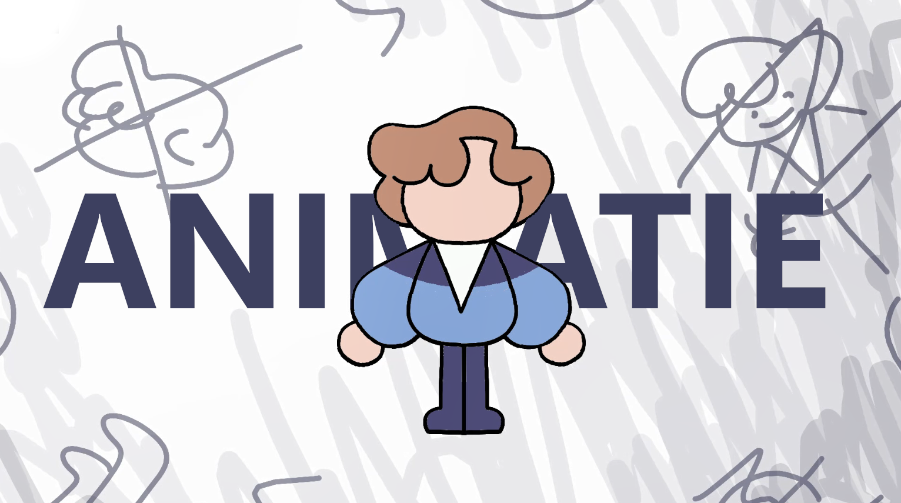
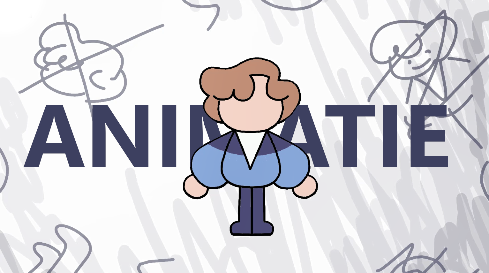

De Geschiedenis van Animatie
Rol: Volledig zelfgemaakt - December 2022
Een korte animatiefilm, over - en aan de hand van - de verschillende animatiestijlen die door de tijd heen zijn ontwikkeld.
Van jongs af aan vind ik het altijd heel leuk om video's te maken, en ik ben inmiddels vaardig in elke stap van het proces. Van het editen tot het opnemen of animeren, en zelfs de audiodesign!
Hier vind je de grootste videoprojecten die ik tot nu toe heb ondernomen.
Rol: Volledig zelfgemaakt - December 2022
Een korte animatiefilm, over - en aan de hand van - de verschillende animatiestijlen die door de tijd heen zijn ontwikkeld.
Rol: Projectleider, scriptschrijver, animator, muziekschrijver, stemacteur
Een animatiefilm gemaakt om kerst te vieren met mijn vrienden, die hun eigen karakters speelden. Naast hun stemmen heb ik alles zelf gemaakt. Het project is inmiddels al bijna 5 jaar oud, waardoor de kwaliteit een stuk lager is dan de dingen die ik tegenwoordig zou produceren, maar het blijft een van mijn grootste videoprojecten aangezien ik er zoveel tijd in heb gestoken.